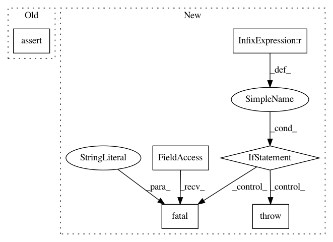

6d854ec8c54e0eb0a73635f41b0598f2d2231069,niftynet/engine/windows_aggregator_base.py,ImageWindowsAggregator,crop_batch,#Any#Any#Any#,71
Before Change
spatial_shape = window_shape[1:-1]
n_spatial = len(spatial_shape)
// import pdb; pdb.set_trace()
assert all([win_size > 2 * border_size
for (win_size, border_size)
in zip(spatial_shape, border[:n_spatial])]), \
"window sizes should be larger than inference border size * 2" \
" received: {}: {}".format(spatial_shape, border[:n_spatial])
if n_spatial == 1:
window = window[:,
border[0]:spatial_shape[0] - border[0],
np.newaxis, np.newaxis, ...]
After Change
cropped_shape = np.max(location[:, 4:7] - location[:, 1:4], axis=0)
left = np.floor(
(spatial_shape - cropped_shape[:n_spatial])/2.0).astype(np.int)
if np.any(left < 0):
tf.logging.fatal(
"network output window can be "
"cropped by specifying the border parameter in config file, "
"but here the output window %s is already smaller "
"than the input window size minus padding: %s, "
"not supported by this aggregator",
spatial_shape, cropped_shape)
raise ValueError
if n_spatial == 1:
window = window[:,
left[0]:(left[0] + cropped_shape[0]),
np.newaxis, np.newaxis, ...]
In pattern: SUPERPATTERN
Frequency: 3
Non-data size: 6
Instances
Project Name: NifTK/NiftyNet
Commit Name: 6d854ec8c54e0eb0a73635f41b0598f2d2231069
Time: 2017-09-01
Author: wenqi.li@ucl.ac.uk
File Name: niftynet/engine/windows_aggregator_base.py
Class Name: ImageWindowsAggregator
Method Name: crop_batch
Project Name: NifTK/NiftyNet
Commit Name: 6df74e5750f146bfd7bc5e7a2c49b2e40d6a457c
Time: 2017-08-31
Author: wenqi.li@ucl.ac.uk
File Name: niftynet/engine/application_variables.py
Class Name: OutputsCollector
Method Name: _add_to_dict
Project Name: NifTK/NiftyNet
Commit Name: ffa271e34384438030753e46e20322ea8dc489a4
Time: 2017-08-23
Author: wenqi.li@ucl.ac.uk
File Name: niftynet/engine/application_driver.py
Class Name: ApplicationDriver
Method Name: _randomly_init_or_restore_variables